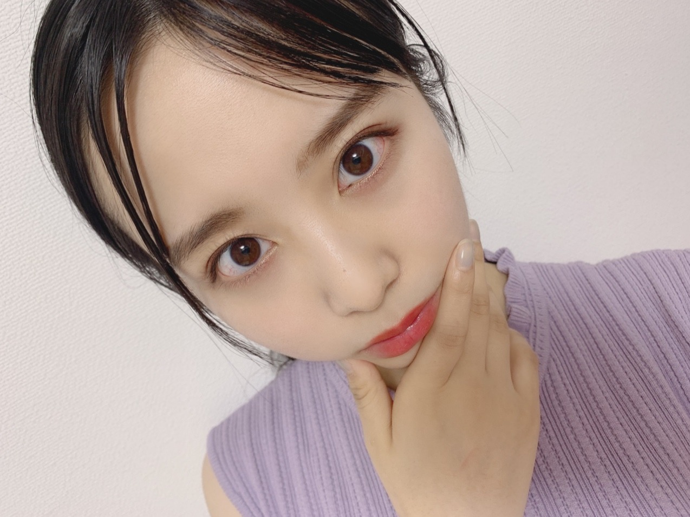
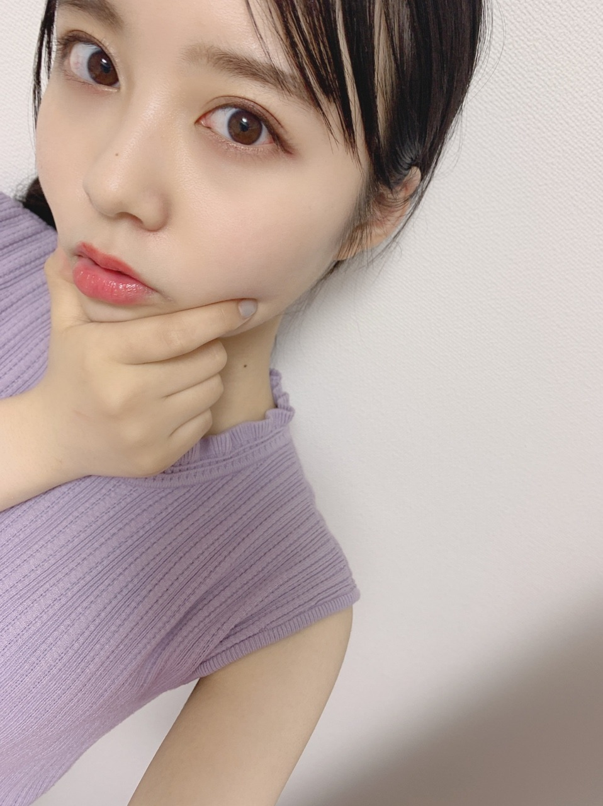
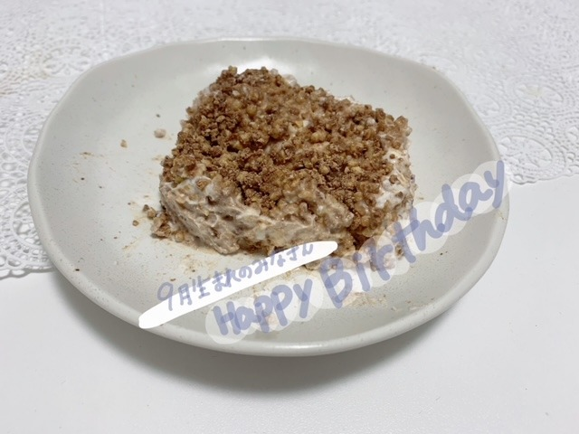
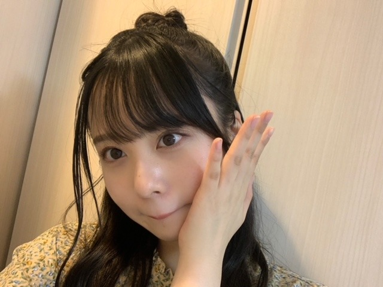

2020/0930Wed綺麗で、素敵な色。佐藤璃果
乃木坂46 （新）4期生 岩手県出身
佐藤璃果です。

おでこ
もうすぐ10月ですねぇ
ノースリーブとは
だいぶ前におさらばしました。

おでこ
でしょうか？？( ˙-˙ )
~~~~~~~~~~~~~~~~~~~
考えに考えて、
サイリウムカラーは、
桃✖️ターコイズ
にしようと思います！
無いサイリウムカラーです！
この組み合わせ、とても綺麗だと
ターコイズは11番です。
青緑のような素敵な色味です。
桃の方は、"ガーベラ（ピンク）"と、
"ストレプトカーパス"の花言葉を
ターコイズの方は、"緑色のバラ"の
花言葉を意識してみました。
ガーベラ（ピンク）は"感謝"、"思いやり"
ストレプトカーパスは"ささやきに耳を傾けて"
"信頼に応える"
緑色のバラは"穏やか"、
"あなたは希望を持ちえる"
という花言葉です！
桃とターコイズのカラーを見て
友達と見た地元の紫陽花を
思い出すんですよね。
地元は沢山、紫陽花が咲いていたので、
それも理由の一つです！
紫陽花といえば紫では？
と思う方もいると思います。
桃とターコイズを混ぜたら
紫っぽいお色味になるようです。
混ぜたら乃木坂カラー。
そこも素敵なところです。
紫陽花は色んな花言葉がありますが、
特に好きなのは"ガクアジサイ"の
"謙虚"という花言葉です。
皆さんもこのお色味を
好きになってくださると嬉しいです。
優柔不断すぎて永遠に迷っていました。
このカラーを持ってらっしゃらない方が
居たらすみません、。
その方は、ターコイズは
サイリウムのカラーを見たら、
水色が1番近いかなと思うので、
代用する場合はそちらでお願いしたいです！
❁
ちなみにストレプトカーパスは、
私の誕生日8月9日の誕生花でもあるんです！
❁
~~~~~~~~~~~~~~~~~~~
9月27日、中村麗乃さん
❁お誕生日おめでとうございます❁
手足が長くて、
ブログもいつもメイクやお洋服など、
本当に可愛くていつも楽しく見させて頂いています！
いつかお話できたら嬉しいです！
素敵な一年になりますように。
それと、9月27日は日向坂46さんの
髙橋未来虹ちゃんのお誕生日でした！
おめでとう~♡♡
9月生まれの皆さん、
お誕生日おめでとうございました！
素敵な一年になりますように。
ケーキの写真

今回は、
ヨーグルトとカッテージチーズで作った
レアチーズケーキです。
いつもコメント
本当にありがとうございます。
今回はノキザカスキッツについてと、
TIFについてのコメントが多かったかな(*^^*)
見てくださってありがとうございます！
TIFに私達も出演させて頂けることに
感謝の気持ちを忘れず、
4期生、新4期生のみんなとの
初めてのパフォーマンスを、
皆さんに楽しんで頂ければと思います。
今は支えられ、
助けられながら毎日を過ごしています
秋が来たかと思えば、
乃木坂の夏の様な熱い気持ちを味わえる
素敵な日になりますように。
精一杯努めます。
10月4日に会いましょう！！
~~~~~~~~~~~~~~~~~~~
明日は林瑠奈っ！
バナナミルク美味しいんだって！！
（伝言ゲームじゃないよby奈於ちゃん☺︎）
林は飲んだことありそう！！
~~~~~~~~~~~~~~~~~~~
素敵な一日になりますように。
この間の猫舌SHOWROOMで
メイクさんがしてくださった本当に
可愛い髪型をお届け~
前回頭が切れていたので( ˙-˙ )

皆さん、9月もお疲れ様でした~☽･:*
またね~
#32 りか

PROFILE
新4期生リレー
202104
| SUN | MON | TUE | WED | THU | FRI | SAT |
|---|---|---|---|---|---|---|
| 1 | 2 | 3 | ||||
| 4 | 5 | 6 | 7 | 8 | 9 | 10 |
| 11 | 12 | 13 | 14 | 15 | 16 | 17 |
| 18 | 19 | 20 | 21 | 22 | 23 | 24 |
| 25 | 26 | 27 | 28 | 29 | 30 | |

コメント(320)
ノギザカスキッツ見たよ！
またナース姿が見られて本当に最高でした！
いつも本当に元気もらってます！
これからも頑張ってねー！
ゆっちゃんより。
今回のノギザカスキッツも、おもしろ可愛かったです！
明日から10月ですね。9月もありがとうございました！10月もよろしくお願いします！
毎回楽しみに読んでるよー！
お！サイリウムカラーが決まりましたのね！
桃とターコイズ！しっかり把握しました！ライブで璃果ちゃんの前でこの色振る時が早く来て欲しいね！
サイリウムカラーすごい良い、、
TIFで画面の向こう側からサイリウム振ります( ˆ ˆ )/♡
楽しみにしてるね！
ブログ更新ありがとう♡♡♡♡♡♡♡♡♡♡♡♡♡♡♡♡♡♡
本当りかちゃん可愛すぎる♡♡♡♡♡♡デコだし可愛い♡♡♡♡♡赤ちゃんみたいで可愛いでちゅ〜♡♡♡♡♡♡♡♡♡♡♡♡りかちゃんは元々赤ちゃんみたいでとっても可愛でちゅよ〜♡♡♡♡♡♡♡♡♡♡♡♡明日から10月ですね♡♡♡♡♡りかちゃんは9月はいい思い出はありましたか？？♡♡♡♡♡♡♡♡♡早くりかちゃんに会いたいでちゅよ〜♡♡♡♡♡♡♡♡♡りかちゃんに会ったらたくさん話したいでしゅ〜♡♡♡♡♡♡♡♡♡♡♡♡♡♡♡♡早く会えるのを楽しみにしてます♡♡♡♡♡♡♡♡♡♡♡♡♡♡♡♡♡♡♡
またブログ更新楽しみにしてます♡♡♡♡♡♡♡♡♡♡♡♡♡♡
またね♡♡♡♡♡♡♡♡♡♡♡♡♡♡♡♡♡♡
璃果ちゃんブログ更新ありがとう〜！
サイリウムカラーは桃とターコイズね！メモしました〜！！
一日でも早くこの色のサイリウムを振れる日が来て欲しいね！
やっぱりサイリウムカラーってその人を表すからゆっくり考えて深い意味があるんやなぁって感じたね〜
今回の話にもでてきた花言葉は僕も調べていこうかと思います！
そういや明日からもう10月やけど、璃果ちゃんは10月にしたいこととかありますか〜？？？
んじゃもう今年も3ヶ月だけど、こっからまた頑張っていこー
りっちゃん！
やっほー！
ひろき(Yandji)です☺️
ブログ更新ありがとー！！！
質問タイムー！！！
かっきーとのエピソードあったら教えてー！
また、コメントするね！
では、またねー！
ひろき(Yandji)より
サイリウムカラー、決まったんですね！
たくさんの素敵な意味が込められていて、とてもいいなと思いました。会場で桃×ターコイズのペンライトを振るのが楽しみです！
またの更新、楽しみにしてます！またね！
確かに！
今まで歴代でターコイズ色使ったメンバー誰もいなかったはず！
公式サイリウムにもあるもんね。
ターコイズ色。
新しいね！
明日で10月だね、僕も夏服はおさらばしました。
おでこ出すと大人っぽさがますね！
サイリウムカラー決まったんだ！
桃とターコイズか、いいね！
璃果ちゃんは花に因んだ感じで決めたんだね。今までのメンバーのサイリウムカラーの決め方とは違うくて新鮮や笑
桃とターコイズは混ぜると紫っぽくなるのか。
素敵だね。
TIF頑張ってね！
見れないけど、応援してる！ここのろ中でサイリウムもつけとくね笑
璃果ちゃんにとっても素敵な1日になりますように。
またブログ更新楽しみにしてます！
(=ﾟωﾟ)ﾉﾎﾅ､ﾏﾀ!!
桃×ターコイズめちゃ良い〜！！
画面前で早速振るね！
璃果ちゃん推しの方の配信で皆で一緒にブログ見たよ。
皆サイリウムカラーで盛り上がった！
桃×ターコイズめっちゃいい！！
ライブ始まったら振りまくるね！笑
また次回も楽しみにしてるね〜！
TIFも楽しみにしてるね！！
猫舌の髪型2人とも可愛かったです。
●"幼なじみかつ" ください、笑
どの璃果ちゃんも可愛いな〜
ノギザカスキッツのキュンキュン病棟の璃果ちゃんめっちゃ可愛くて終始キュンキュンしてます。
また見たいなー‼️
これからも体調に気をつけて頑張って
ついについに璃果ちゃんのサイリウムカラーが決まったぁぁぁぁぁ！
理由もめっちゃめっちゃ素敵だし、特に→あなたは希望を持ちえる。ここ最高です！LIVEや握手会のあと璃果ちゃんとの思い出が楽しい！また来たいっていう希望を持ち帰るって感じがして本当に鳥肌立ちました！！
混ぜたら乃木坂カラーになるって所が凝ってて璃果ちゃん最高だな！って思いました！！
10月4日のTIFのLIVEは画面越しでサイリウム振りますね！！璃果ちゃんに届きますように！！
TIFも4期生全員は初めてだし楽しみ
質問〇璃果ちゃん！！レアチーズケーキを作る時に難しかった点とかはありましたか？？
〇璃果ちゃん！TIF画面越しでサイリウム振ったけど届いたかな？？
璃果ちゃんにとってより良い日々になりますように！
TIFのLIVE頑張ってね！
ゴードンでした！10月4日までまたね！！
今週のノギザカスキッツ見たよ！
安定の面白さに可愛さもあって最高でした！
今日で9月も終わりだね。
明日からはもう10月！Σ(ﾟдﾟ；)
ほんと、今年は1年が圧倒間に過ぎている印象です。
外の気温も少しずつ寒くなってきたね。
朝晩は特に寒くてニットを着たりしてます
璃果ちゃんも体調管理には気をつけねて！
質問コーナーお願いです。
Q10月と言ったら何を思い浮かべますか？
Q秋の好きなコーデを教えてください！
Q10月のお花って何がありますか？
よかったらお答えお願いします！
また次のブログ更新も楽しみにしてるね！
またねー
PS.裸足でななよだ(きょうすけ)
自信を無くしてしまいました。璃果ちゃんの言葉で勇気づけてください、、
りかちゃん今日も１日お疲れ様です。
りかちゃん今日も可愛いです。
今日はお仕事でした。
今日はバタバタして疲れました。
明日もお仕事です。
今日は浴衣の生写真届きました。
りかちゃんの浴衣の生写真出ました。
昨日はフラワープリントの生写真届きました。
フラワープリントでもりかちゃんの生写真出ました。
これからもりかちゃんの生写真集めていきます。
これからもお仕事頑張って下さい。
自分もお仕事頑張ります。
これからのブログを楽しみにしてます。
おでこ可愛いね。全然いつもと印象が違
う。もしかしたら、街で見かけてもわか
らないかもです。
ノースリーブは女の子っぽい服で好きで
す。
そうだね、１０月はロンＴの季節だね。
ターコイズ、使いましたね。新色。
いま、緑を使ってるメンバーはいるけど、
ターコイズを使ったの初めてじゃない？
それに、選んだ色の理由が素敵だね。
ストレプトカーパスって初めて聞く花の
名だけど、写真みたらよく見かける花で
した。身近でいいです。
９月27日は自分も誕生日でした〰️
誕生日の花は何かな
教えてください
生まれてこの方そんなものに興味がなくて調べたことも無かった〰️
サイリュウムカラー決まったんだね
おめでとう
LIVEで見つけてね〰️
それではこの辺で
かっきーと同郷の マサシ◢
それと桃×ターコイズ綺麗な色の組み合わせって感じ！ちょっと専門的な話になっちゃうけどpccsトーンっていう色の表示方法があるんだけどターコイズがb14とb16、桃色がb24かlt24+っていう表示方法でその2色が捕色関係にある2色を使った「ダイアード」っていう配色で彩度差も激しくなくダイナミックだけど落ち着いた印象を与える配色ですごくいいと思う！長くなったけどとりあえずすごくいい！これからその色をみかけたら璃果ちゃん思い出すようにします()
レアチーズケーキも美味しそう☺︎TIFとか色々これからも頑張ってください！応援してます！！
また待ってます！今年も残り3ヶ月がんばりましょう！
璃果ちゃんのサイリウムカラーと同じ色のカラーペン
中間テストの勉強で使ってる！桃×ターコイズ
これで苦手な理科も頑張れるかも…(？)
私も半袖とはおさらばした！
9月もお疲れ様でした 次まで待ってるね〜
サイリウムカラー覚えた！早くライブできるようになってほしい…‼︎
そういえば、前回の璃果ちゃんのブログで掛橋沙耶香ちゃんとのコンビ名の候補に「砂糖掛け」があって他にも案を募集しますみたいなこと書いてたけど、この前の掛橋沙耶香ちゃんのブログではSRでコンビ名が砂糖掛けになりましたって書いててすでにコンビ間に噛み合ってない部分が…笑
質問！
・璃果ちゃんは欅坂さん、日向坂さんのユニゾンエアーやってる？
次回更新は10月だ！また楽しみに待ってるねー！
可愛いです
レアチーズケーキ美味しそう
食べたい♡
りかちゃんのタオル持ってサイリウムカラーにしてりかちゃんのコールはやくしたいなーー
今日も可愛いです！目の保養、、、
サイリウムカラー覚えました！いい意味ですね！
サイリウムカラー決定おめでとう～(^∇^)
被らず意味の有る物を考えると中々決まらん
よね、お疲れ様でした～(^-^ゞ
サイリウムカラーよく考えられていてとてもいいも思うよ〜
いろんな意味が込められていて素敵だね！
コメントするのは久しぶりになったけどブログは全部見てるので、これからもブログ更新楽しみにしてるね！
(次に好きなのはズコー)
ターコイズってどんな色か分かんなくて調べてみたら、僕めっちゃ好きな感じの色でした！
すんごい嬉しい！！
ライブで振るのが楽しみです！！
混ぜたら乃木坂カラーになるのいいね！
会場がその2色で埋まったら絶対きれいだね！！
次のブログも楽しみに待ってます！
またね
#32☆みんみ☆
ブログ更新ありがとうございます
サイリウムカラー決まったね
桃✖️ターコイズ
誰ともかぶらないサイリウムカラーの方が
俺もいいと思っていました
サイリウムカラーの決め方も花言葉を使って
璃果ちゃんらしくていいですね
ロマンティックいか焼きの歌詞にも
ターコイズのリングと出てきますし
乃木坂もミーグリ始まりますね (^.^)
メンバー見たら当然だけど璃果ちゃんの
名前はなかったですね
ミーグリとかで璃果ちゃんに逢えるのは
次のシングルになるのかな？
早く逢える日を楽しみに待っております
テレ東音楽祭で日向や欅の同期メンバー
頑張っていましたね
早く璃果ちゃんもテレビの歌番組に
出れるといいな
あっ写真かわいいですね
璃果ちゃんに惚れちまうがな
べた惚れでしょうがない俺です
早々と冷え込んで来たので長袖の出番です。
サイリウムカラーが桃×ターコイズという事で誠に綺麗な組み合わせ。花言葉に想を得たのはりかちゃんならでは。2色の花が会場に咲き誇る日が待ち遠しい限りですね♪
ヨーグルトを使ったチーズケーキとはまろやかそうな味わいかな？
4期生勢揃いとなる『TIF2020』。飛び切りのパフォーマンスを届けられます様に。
ノースリーブ璃果ちゃん美しすぎません！？
オーラぶわんぶわん出てます...好き...
髪型もばちばちに似合ってて綺麗です
-----------------------------
サイリウムカラー決まったんですね〜！！
実は研修生ツアーの時からずっとどの色になるんだろうな～って考えていて、すごく楽しみにしてたんです。
くろみんが昨日のブログで発表されていたのでめちゃくちゃドキドキしてました...
桃×ターコイズってとっても素敵ですね
桃は璃果ちゃんにぴったりだと思って予想していたのですが、ターコイズはもう最高です。
嘘だと思われそうなんですけど、ずっと｢ターコイズが一番好き！｣って言ってきてたので大喜びでした！
お花から決めるのがさすが璃果ちゃんだなと、カラーに込められた意味に感動しました。
これから桃色とターコイズのものばかり買ってしまいそうです
(僕の誕生花もストレプトカーパスなので勝手に嬉しくなっちゃいました...！)
-----------------------------
TIF出演おめでとうございます！
16人でのパフォーマンスということでファンとしてもすっごく嬉しいです！！
お家からたくさん応援していますね〜
-----------------------------
質問をさせていただきます↓
・サイリウムカラーを決める時はご家族と相談したりしましたか？
・ノギザカスキッツでやってみたい役柄はありますか？
ぜひ聞かせてください！
-----------------------------
今はまだライブに行けないけど、桃とターコイズのサイリウムを振って璃果ちゃんに声援を届けられる日が来るのをすごく楽しみにしています！
次回のブログも楽しみに待ってますね〜！大好きです！！
あきひろ
10月も応援してます。よろしくお願いします
コメントする